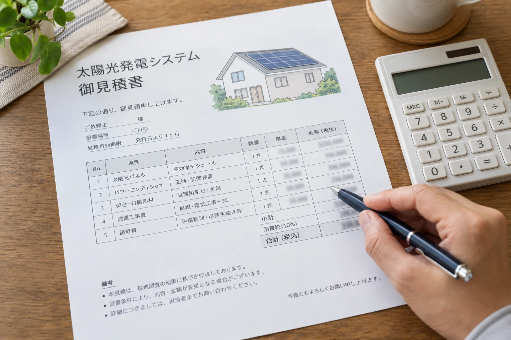
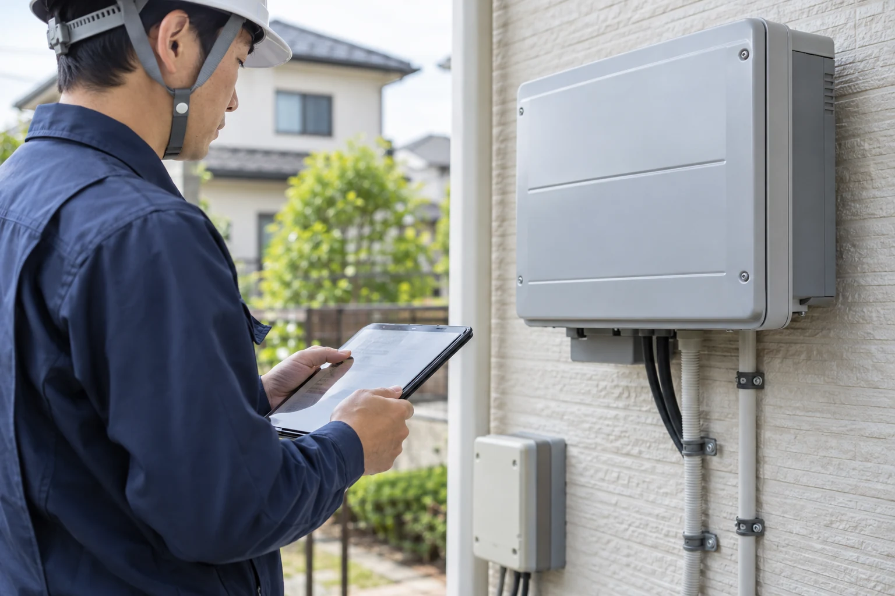

太陽光で，電気代は安くなる？
電気代削減と売電収入は，30年間で合計約296万円
東京都の既存住宅に太陽光4 kWを設置し，蓄電池を付けずに30年間使う当サイトの試算では，電気代削減が約209万円，売電収入が約86万円で，合わせて約296万円の効果があります．合計は，丸める前の金額から計算しています．設置費や維持費を差し引く前の金額であり，利益ではありません．試算の条件・計算根拠
太陽光で発電した電気を自宅で使えば，電力会社から買う電気が減り，電気代の節約につながります．使い切れずに余った電気は，売電収入になります．この試算の最初の1年間では，電気代削減は月平均約4,700円，売電収入は月平均約5,700円です．試算の条件・計算根拠
太陽光で発電した電気は，自宅で使って電気代を減らす分と，余った電気を売って売電収入を得る分に分かれます．単価の例は自宅で使う場合が約31円／kWh，売る場合がFIT期間中8.3〜24円／kWhです．
自宅で使う単価は当サイトの東京都の試算条件．売電は2026年度認定の住宅用FIT期間中の単価です．
太陽光パネルは長期間使う設備で，近年は30年間の出力保証を設けた製品もあります（LONGi，2024）．当サイトでは30年間の利用を想定し，売電単価の変化や経年による発電量の低下を織り込んで試算しています．初年度の月額が30年間続くわけではありません．途中で必要になる機器の交換費用は，後の章で説明します．実際の効果は，地域や屋根の日当たり，電気の使い方によっても変わります．ここからは，その違いを見ていきましょう．
発電量と昼間の使い方で，節約額・売電収入は変わる
日照に恵まれ，屋根に影がかかりにくい家ほど，発電量を確保しやすくなります．屋根の向きや広さ，載せられるパネルの量によっても，自宅で使ったり売ったりできる電気の量が変わります（太陽光発電協会，2026c）． 例えば，東京都で同じ4 kWのパネルを設置する当サイトの試算では，初年度の発電量は南向きで年約4,700 kWh，東・西向きで年約4,000 kWhとなり，東・西向きは南向きより約15％少なくなります．試算の条件・計算根拠
基本的には，発電した電気は売るよりも，自宅で使う方がおトクです．例えば，1 kWhを自宅で使えば約31円の電気代を減らせるのに対し，2026年9月に確認した関東の買取例では，FIT終了後に売る場合は約8.5〜11円の収入になります（東京電力エナジーパートナー，2026b；ENEOS Power，2026a）．この買取価格との比較では，同じ電気でも，自宅で使う方が約3倍の家計への効果があります．
在宅勤務をしている人や，日中も家で過ごす家族がいる家庭では，エアコンや調理，洗濯などに発電した電気を使えます．家族が多くても，昼間は全員が外出する家庭では使える量が限られます．人数だけでなく，誰が何時ごろ家にいて，電気を使うかがポイントです．同じ発電量なら，自宅で使う分が増えると売電収入は減りますが，電気代の節約は増えます．
売電単価は途中で下がり，FIT終了後は売電先によって変わる
売電収入は，売る電気の量と買取価格によって変わります．2026年度認定の住宅用FITでは，買取価格は運転開始から最初の4年間が1 kWh当たり24円，5～10年目が8.3円です．10年間のFIT期間が終わると，その後は売電先の買取条件によって収入が変わります（経済産業省，2026；東京電力エナジーパートナー，2026b）．
2026年度認定の住宅用FIT．最初の4年間は24円／kWh，5〜10年目は8.3円／kWh．11年目以降の単価は確定していません．
例えば，2026年度の関東では，東京電力エナジーパートナーの再エネ買取標準プランは1 kWh当たり8.5円，ENEOS太陽光買取は11円です（ともに税込）．ENEOSは，他サービスの契約を条件としない通常価格です（東京電力エナジーパートナー，2026b；ENEOS Power，2026a；ENEOS Power，2026b）．仮に年間2,000 kWhを売る比較例なら，年間の売電収入は17,000円と22,000円で，差は5,000円になります．これらは2026年9月に確認した価格であり，10年後の買取価格を保証するものではありません．
FITの満了を見越して，売電先の価格や契約条件を比べておきましょう．蓄電池を使い，昼間の余った電気を夜に自宅で使う分を増やす方法もあります．自家消費と売電は組み合わせられるため，自宅で使う分と売る分を考えながら選びましょう．蓄電池の効果と注意点は，次の節で紹介します．
蓄電池があれば，昼間の余った電気を夜にも使える
蓄電池があれば，昼間の余った電気をため，夜に使うことで，電力会社から買う電気を減らせます．充電・放電の際には電気の一部が失われます．東京都を例にした試算では，9.5 kWhの蓄電池を追加すると，電気代の節約と売電収入を合わせた家計への効果が，太陽光のみより最初の1年間で約9,000円増えます．ほかの条件が同じなら，売電単価が下がると，ためて自宅で使うメリットは大きくなります．試算の条件・計算根拠
蓄電池の追加導入費は，補助金を差し引く前で約115万円が目安です．元が取れるかは，節約が増える額や将来の交換費によって変わります．費用の採用値・計算根拠
停電に対応した設備なら，蓄電池に残っている電気の範囲で，夜の照明やスマートフォンの充電などにも使えます．ためられる電気の量や一度に使える家電には限りがあり，接続先も機種や工事の内容によって異なります．
太陽光の設置には，いくらかかる？

太陽光の設置には，機器と工事の費用がかかります．蓄電池を加えると費用は増えますが，補助金を利用できれば自己負担を減らせます．実際の金額は，住宅や工事の条件によって変わります．
設備・工事費と，補助金を利用した場合の自己負担
太陽光のみ約132万円補助金控除前
太陽光＋蓄電池合計 約247万円補助金控除前
132万円
115万円
太陽光＋蓄電池＋補助金自己負担 約227万円
既存住宅に太陽光4 kWを設置する試算．蓄電池ありは9.5 kWhを追加．棒の長さは表示金額の比率です．設備・工事費247万円は同じで，補助金分だけ自己負担が減ります．
相模原市の2026年度制度で，太陽光と連系する対象蓄電池への奨励金20万円を受けられた場合の例です（相模原市，2026）．この奨励金のみを差し引いています．利用には制度の要件を満たす必要があります．
ここからは，太陽光・蓄電池の費用，補助金，住宅・工事条件を順に見ていきましょう．
太陽光の設備・工事費は，約132万円が目安
太陽光パネルなどの機器と設置工事を合わせて，補助金を差し引く前で約132万円が目安です．国の費用資料を参考に，既存住宅へ4 kWを設置する条件で当サイトが計算した金額です（調達価格等算定委員会，2026）．
費用には，太陽光パネル，発電した電気を家庭で使えるようにするパワーコンディショナ，取付部材，配線，標準工事および諸経費が含まれます．
設置するパネルの容量が大きくなると，導入費用も増えます．当サイトの試算では，既存住宅への設置で，容量が1 kW増えるごとに約33万円増える計算です．補助金を差し引く前の目安です．費用単価の出典・採用条件
実際の費用は，選ぶメーカーや製品，屋根や工事の条件によって変わります．パネルの変換効率や保証内容も製品によって異なるため，工事費を含む総額と合わせて比較しましょう．変換効率が高いパネルは，同じ面積でより大きな容量を確保できます．
蓄電池を加えると，約115万円の追加が目安
当サイトの試算では，9.5 kWhの蓄電池を加えると，設備・工事費が約115万円増えます．既存住宅に設置する太陽光4 kWと合わせて，補助金を差し引く前の総額は約247万円が目安です．設備・工事費の計算根拠
蓄電池の容量が大きくなると，導入費用も増えます．当サイトの試算では，容量が1 kWh増えるごとに約12万円増える計算です．補助金を差し引く前の目安で，実際の費用はメーカーや製品，工事の条件によって変わります．容量当たりの費用の採用根拠
補助金を利用できれば，自己負担を減らせる
補助金を利用すると，設備費や工事費の自己負担を減らせます．例えば，相模原市の2026年度制度では，太陽光と接続して使う対象の家庭用蓄電池に，一律20万円の奨励金が交付されます（相模原市，2026）．この奨励金を受けられれば，先ほどの設備・工事費約247万円から20万円を差し引いた自己負担は約227万円です．ほかの補助金は含めていません．
利用できる制度や金額は，地域，年度，住宅・設備の条件によって異なります．お住まいの地域の制度を調べ，自宅や導入予定の設備が対象になるか確認しましょう．
申請のタイミングは制度によって異なり，契約・着工前に申請して交付決定を受ける必要がある制度もあります（群馬県，2026）．また，申込みが予算上限に達すると，受付期間中でも終了する場合があります（神奈川県，2026）．見積もりと並行して，申請時期と最新の受付状況を早めに確認しましょう．
住宅や工事の条件によって，実際の費用は変わる
ここまでの金額は当サイトの試算であり，実際の費用は住宅の状態や工事内容によって，目安より安くなる場合も高くなる場合もあります．例えば，屋根の補修や配線の延長など，標準工事の範囲を超える作業が必要になると，費用が増えることがあります（京セラ，2026a；京セラ，2026b）．
自宅の場合の費用は，現地調査を踏まえた見積もりで確かめましょう．必要な工事を確認し，標準工事に含まれる範囲と別途かかる費用を分けて見ます．複数社の見積もりは，設備・工事・保証の条件をそろえて比較しましょう．
太陽光は，設置した後も費用がかかる？

設置後も点検・機器交換の費用がかかります．将来の支出も見込んでおきましょう．
点検・機器交換は，30年間で約61万円が目安
当サイトの試算では，30年間の点検・機器交換費は約61万円が目安です．国の資料では，点検は3～5年ごと，パワーコンディショナの交換は20年間で1回が想定され，費用は点検1回3.8万円，交換1回38.4万円とされています（調達価格等算定委員会，2026）．パワーコンディショナは，発電した電気を家庭で使えるように変換する機器です．当サイトでは，点検を5年ごとに6回，機器交換を20年目に1回計上し，合計61.2万円と計算しています．
30年間の合計：約61万円
点検3.8万円×6回＋交換38.4万円×1回＝61.2万円
点検・交換の時期と回数は，当サイトの試算上の設定です．費用の採用値・試算条件
実際の点検・交換の時期や金額は，設備の状態や依頼先によって変わります．約61万円には，突発的な修理，蓄電池の交換，撤去などの費用は含めていません．ここからは，費用が変わる要因と，必要に応じて見込む支出を見ていきましょう．
点検の頻度や依頼先によって，費用は変わる
当サイトでは，点検費を1回3.8万円，5年ごとに6回として試算しています（費用の採用値・試算条件）．同じ料金でも，点検回数が増えると総費用は増えます．太陽光発電協会は，設置後1年目，その後は4年に1度の定期点検を推奨しています（太陽光発電協会，2026b）．試算上の頻度をそのまま点検の予定にせず，自宅の設備に必要な時期は販売店やメーカーへ確認しましょう．
1回当たりの料金も，依頼先や点検に含まれる作業によって変わります．見積もりでは，点検項目，足場などの費用，保守契約に含まれる範囲と別途料金を確認しましょう．点検と修理は別の作業なので，不具合が見つかった場合の修理費まで含むかも確かめておくと，必要な支出を見込みやすくなります．
機器の交換時期や保証の範囲によって，費用は変わる
当サイトの試算には，パワーコンディショナを20年目に1回交換する費用を含めています．実際の交換時期や回数，交換にかかる金額によって，総費用は変わります．突発的な修理費や，蓄電池を設置した場合の交換費は含めていないため，必要に応じて別に見込んでおきましょう．費用の採用値・含まない費用
修理・交換時の自己負担は，保証の対象になるかどうかでも変わります．保証の期間や対象範囲は，製品や契約によって異なります（ソーラーフロンティア，2017）．保証書と見積書で，対象となる機器や故障の条件に加え，機器代や作業費のどこまで保証されるかを確認しましょう．
パネルの撤去・処分や，屋根工事に伴う取り外しには費用がかかる
屋根の補修・葺き替えでは，太陽光パネルの取り外しが必要になる場合があります（太陽光発電協会，2026d）．工事後も使い続ける場合は，再設置まで含めて販売店や施工店に相談しましょう．屋根自体の工事費に加え，パネルの取り外し・再設置にいくらかかるかを見積もりで確認しておくと，必要な支出を把握しやすくなります．
太陽光設備を使い終えて撤去する場合は，屋根から取り外す費用のほか，運搬や処分の費用も見込む必要があります（太陽光発電協会，2026d）．これらの費用や，屋根工事に伴う一時撤去・再設置の費用は，この章で示した約61万円には含めていません．自宅の工事計画や設備の使い方に合わせて，別に見込みましょう．費用の採用値・含まない費用
太陽光で，どのくらいトクする？
節約と売電で得られる効果が，設置後の費用も含めた支出をどれだけ上回るかが，収支を見るポイントです．
30年間で約102万円トクする試算
当サイトの試算では，太陽光のみを設置し，補助金を利用しない場合，30年間で約102万円トクする計算です．電気代削減の約209万円と売電収入の約86万円から，設置費の約132万円と点検・機器交換費の約61万円を差し引いています．金額は丸めて表示していますが，収支は丸める前の数値から計算しています．試算の条件・計算根拠
約102万円は，一定の条件を置いた目安であり，どの住宅でも同じ結果になるわけではありません．設置費や補助金，発電量，電気の使い方，維持費や使用期間によって収支は変わります．ここからは，それぞれの条件による違いと，蓄電池を加えた場合の収支を見ていきましょう．
設置費が安く，補助金が多いほど，収支は改善する
発電量や電気の使い方，維持費など，ほかの条件が同じなら，設置費が下がった分，または補助金を受け取った分だけ，30年間の収支は改善します．前節の約102万円は補助金なしの試算なので，利用できる補助金があれば，その金額を収支に加えて考えられます．試算の条件・計算根拠
自宅の収支を確かめるときは，見積もりの設置費から，実際に利用できる補助金を差し引いて自己負担を確認しましょう．見積もりは，設備の容量や性能，工事の範囲，保証の条件をそろえて比較することが大切です．補助金の対象条件や申請時期は，設置費の章の補助金を利用できれば，自己負担を減らせるで確認できます．
発電量や昼間の自家消費が増えると，収支は改善する
同じ設備・費用条件なら，発電量を確保できるほど，電気代削減や売電による効果が大きくなります．屋根の日当たりがよく，建物や木の影が少ないかを確認しましょう．設置容量が同じでも，日当たりなどの条件によって発電量は変わります．
同じ発電量でも，電気を使う時間によって，自宅で使う分と売る分の配分が変わります．今回の試算条件では，昼間の自家消費が多い家庭のほうが，収支はよくなります．普段必要な洗濯などの電気の使用を，無理のない範囲で発電する時間帯へ移すことが，買う電気を減らす工夫になります．
以下は，東京都の既存住宅に南向きの太陽光4 kWを設置し，蓄電池・補助金なしとした比較です．地域，設備，電気料金の入力条件などをそろえ，平日昼間の在宅状況だけを変えて試算しています．試算の条件・計算根拠
| 項目 | 家庭A | 家庭B |
|---|---|---|
| 平日昼間の在宅状況 | ほぼ毎日いる | ほとんどいない |
| 30年間の電気代削減 | 約209万円 | 約199万円 |
| 30年間の売電収入 | 約86万円 | 約89万円 |
| 30年間の収支 | 約102万円 | 約94万円 |
この例では，家庭Aは家庭Bより売電収入が少なくても，電気代を多く減らせるため，30年間の収支が約8万円よくなります．ただし，自家消費による節約額と売電収入の関係は，電気を買う単価・売る単価や使い方によって変わるため，どの家庭でも同じ差額になるわけではありません．
蓄電池を加えると，30年間で約96万円トクする試算
当サイトの試算では，蓄電池を加えた設備全体で，30年間に約96万円トクする計算です．太陽光のみの約102万円と比べると，収支は約6万円小さくなります．これは補助金を利用せず，蓄電池を30年間交換せずに使うと仮定し，交換費を含めない試算です．蓄電池の容量や導入価格，利用できる補助金によって結果は変わり，途中で蓄電池を交換する場合は，その費用も差し引いて考える必要があります．試算の条件・計算根拠
一方，停電時に必要な家電へ電気を供給できることも，蓄電池を選ぶ判断材料になります．使える家電や時間は，蓄電池の容量・残量，出力，接続する回路などによって変わります．停電時に何をどれくらい使いたいかを整理し，収支の差と合わせて，備えとしての価値を考えましょう．詳しくは，停電時の太陽光・蓄電池の使い方をご覧ください．
使用期間が短くなったり，維持費が増えたりすると，収支は悪化する
建替えなどで30年より早く利用を終える場合，設置費を電気代削減や売電収入で回収する期間も短くなります．一方，使用期間によって，その間に必要な点検・機器交換の回数も変わります．30年間の収支を単純に年数で割るのではなく，自宅で使う予定の期間に合わせて，得られる効果と発生する費用の両方を確認しましょう．
想定より機器の交換回数が増えたり，修理や撤去などの支出が生じたりすると，その分だけ収支は下がります．前章の設置後にかかる費用を参考に，設備の状態や自宅の工事計画から必要な支出を見込み，試算に含まれていない費用を加えて判断しましょう．
発電量が少ない，追加工事の費用が高いなどの条件では，30年間使っても費用を回収できない場合があります．容量や見積価格を変えて比べ，家計の負担が大きければ導入を見送ることも選択肢です．
自宅でトクするか，どう判断する？
まず診断で自宅の収支の目安をつかみ，導入を検討する場合は見積もりへ進みましょう．
はれトク診断で，自宅の収支の目安を知る
太陽光の収支は，地域や電気の使い方，設置費，補助金など，さまざまな条件で変わります．これらを一つずつ調べて計算するには手間がかかります．はれトク診断では，自宅の条件を入力すると，電気代削減・売電収入と費用を踏まえた30年間の収支を概算できます．
パネル容量や蓄電池の有無を変え，費用を差し引いた収支を比べてみましょう．節約額の大きさだけでなく，得られる効果の増加が追加費用に見合うかを確認することが，設備を選ぶポイントです．
見積もりの導入費用で，収支を確かめる
診断で示す導入費用は概算であり，屋根の状態や必要な工事によって，実際の費用は変わります．導入を具体的に検討する場合は，現地調査で設置できる設備と工事の範囲を確かめ，それらを踏まえた見積もりで自宅の導入費用を確認しましょう．
複数社の見積もりは，設備の容量や性能，工事の範囲，保証の条件をそろえて比較しましょう．利用できる補助金を差し引いた自己負担と，将来の点検・交換などの費用を含めて，電気代削減・売電収入でどれくらい回収できるかを確かめることが大切です．